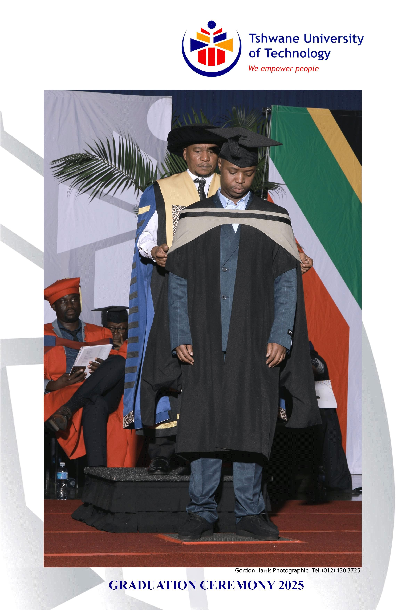

Software Development
Building reliable digital experiences using structured, modern thinking and a problem-solving mindset.
Software Developer • Tech Enthusiast
I am a National Diploma graduate specialising in software development, with a strong interest in UI/UX design, cloud technologies, business analysis, and modern digital solutions.

Overview
Building reliable digital experiences using structured, modern thinking and a problem-solving mindset.
Translating real-world needs into clear requirements, workflows, and meaningful solutions.
Exploring cloud infrastructure, data systems, and the tools that support scalable and efficient operations.
Profile Snapshot
I enjoy building solutions that are not only functional, but also visually engaging and user-friendly. My interests span across UI/UX, software development, data engineering, cloud computing, and mobile application development.
Learn More About Me